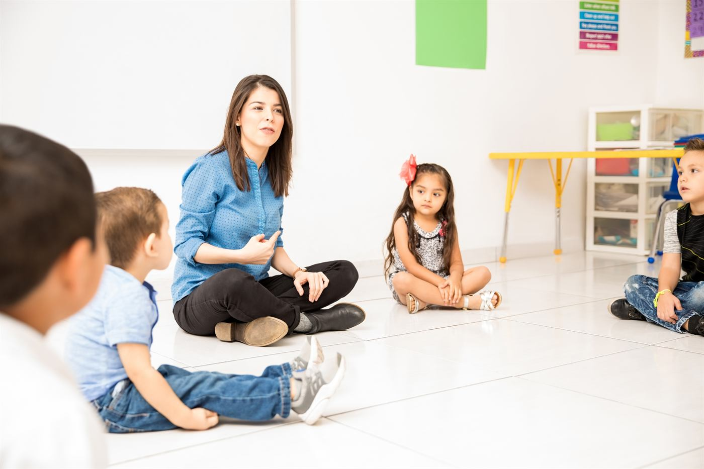

요금표는 연간으로 적혀 있습니다. 그런데 플린더스의 유아교육 경로 셋은 각각 3년, 4년, 2년입니다. 연간 금액으로 비교하면 셋 다 틀린 결론이 나옵니다. 제대로 놓고 보면, 이 선택은 애초에 돈 문제가 아닙니다.
두 학사는 연간 학비가 같습니다
| 과정 | 기간 | 연간 학비 | 과정 총액 | 가르칠 수 있는 범위 |
|---|---|---|---|---|
| 유아교육 학사 (Birth to 5) | 3년 | AUD $35,700 | AUD $107,100 | 유아교육 기관 (0~5세) |
| 유아교육 학사 (Birth to 8) | 4년 | AUD $35,700 | AUD $142,800 | 위 + 초등 저학년(Reception~Year 2) |
| 유아교육 석사 (Birth to 5) | 2년 | AUD $38,100 | AUD $76,200 | 유아교육 기관 (0~5세) · 학사 필요 |

두 학사는 연 AUD 35,700로 똑같습니다. 그래서 4년제의 추가 1년은 정확히 1년치 학비입니다. AUD 35,700, 더도 덜도 아닙니다. 긴 쪽을 고른다고 할인도 없고 벌칙도 없습니다.
그 1년이 사는 것
Birth to 5 코스 페이지는 졸업생이 유아교육 기관에서 가르칠 자격을 갖는다고 씁니다. 거기까지입니다. Birth to 8 페이지는 이 학위가 유아교육과 초등 저학년 양쪽에서 가르칠 자격을 준다고 하고, 페이지 제목 자체가 "Early Childhood & Junior Primary Teacher"입니다.
즉 4년째는 같은 훈련을 더 받는 게 아닙니다. 일할 수 있는 자리가 하나 늘어나는 것입니다. Reception~Year 2 교실입니다. 그게 AUD 35,700의 값을 하는지는 질문 하나로 갈립니다. 초등학교라는 선택지를 열어 둘 것인가, 아니면 유아교육 기관에서 일할 생각인가.
천장은 알아 두셔야 합니다. Birth to 8은 초등 저학년이지 초등 전체가 아닙니다. 일반 초등 교직으로 가는 지름길이 아닙니다. 그쪽은 별도 자격이고 영어 기준도 따로 있습니다.
학위가 이미 있다면 계산이 뒤집힙니다
석사는 셋 중 연간 학비가 가장 높습니다(AUD 38,100). 연간 비교가 사람을 헷갈리게 하는 이유가 정확히 이것입니다. 이 과정은 2년입니다. 총액 AUD 76,200로, 3년 학사의 AUD 107,100보다 약 AUD 31,000 낮습니다. 게다가 1년 빠릅니다.
지원 자격은 "학사 학위, 유아교육(Birth to 5) 대학원 수료증 또는 이에 준하는 자격"으로 적혀 있습니다. 전공은 명시돼 있지 않습니다. 다른 분야 학위라고 문 앞에서 걸리는 구조는 아닙니다.
한 가지 제한은 기억하셔야 합니다. 이 석사는 Birth to 5입니다. 초등 저학년 교실을 원한다면 석사로는 안 됩니다. 그쪽은 4년제 학사가 경로입니다.
영어는 두 학사 모두 전 영역 7.0
입학 기준은 세 과정 모두 IELTS 7.0에 네 영역 모두 7.0입니다. 두 학사는 ACECQA 인증이고, 남호주 교원등록위원회(TRB SA) 등록으로 이어집니다.
다만 입학이 마지막 영어 시험이 아닙니다. 호주에서 교사로 등록하려면 더 높은 기준을 다시 넘어야 하고, IELTS만 인정됩니다. 이 간극은 따로 한 편으로 다뤘습니다. 교직 계획에서 가장 자주 빠지는 부분이니 결정 전에 그 글을 보고 오시는 게 좋습니다.
아무도 말 안 해 주는 경로 — TAFE
위의 모든 경로는 대학 학위를 전제합니다. 더 짧은 문이 하나 있습니다. TAFE NSW 보육 디플로마는 1년, 총액 AUD 17,000~18,000대이고, 이 디플로마 자체가 호주 어린이집·유아교육 기관에서 educator로 일할 수 있는 자격입니다. 학위가 필요 없습니다. 입학 영어도 5.5부터라 대학(7.0)보다 두 단계 낮습니다.
TAFE NSW는 자체 4년 학사(Birth–5)도 운영합니다. 4년 전체 총액이 AUD 62,000~67,500. 연 AUD 15,500~16,900으로, 위 표의 대학 학사 절반이 안 됩니다. 저울에 올릴 것은 졸업장의 이름이고, 뒤에 있는 인증 기관(ACECQA)은 같습니다. 특정 캠퍼스가 아니라 아이들과 일하는 것이 목표라면, 대학 4년을 결제하기 전에 이 경로 가격을 먼저 확인해 보세요.
한 줄로 정리하면
두 학사를 가격으로 고르지 마세요. 같은 가격입니다. 초등 저학년 교실을 열어 둘 것인가로 고르시고, 그렇다면 1년치 학비를 예산에 더하시면 됩니다. 전공이 무엇이든 학사 학위가 이미 있다면 2년 석사가 총액도 싸고 더 빠릅니다. 0~5세가 원하는 범위라면 말입니다. 그리고 어느 쪽을 고르든 등록 영어는 마지막이 아니라 처음부터 계획에 넣으세요.